Méthodes Agiles
Comprendre la démarche
Gaspard POINTEAU@Gaspard_PO
Vous êtes qui ?
Vous voulez quoi ?
Et sinon, ça va ?
Agile, agilité
C'est quoi pour vous ?
L'agilité appartient aux équipes de devs, pas au management
Programme (à ajuster)
- Pourquoi ?
- Manifeste, principes, valeurs
- Différentes démarches
- Specs, User-stories
- Scrum : principes
- Roles : PO, Devs, SM
- DSM, Rétro, Planning, Revue
- Outils, Board, Kanban
- Organisation, entreprise
- Qualité, dette technique
- eXtreme Programming : quelques pratiques
Pauses !
Pourquoi ?
The Standish Group Report
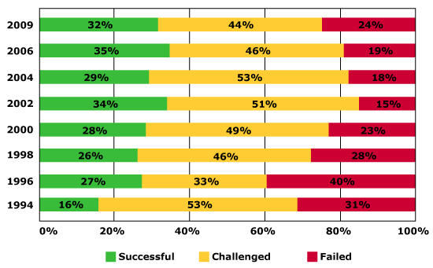100 projects : 94 restarts.
Principales causes des échecs :
- Mauvaise compréhension du besoin : 51%
- Estimation et planification déficiente : 48%
- Technologies mal maîtrisées : 45%
Facteurs clefs du succès :
- Implication des utilisateurs
- Soutien par le management
- Objectifs business clairs
- Equipe motivée
- Périmètre optimisé

Le produit ne sera que ce l'équipe de dev a compris, a voulu faire et a déployé.

Idéalemment
- Le client sait ce qu'il veut
- l'équipe a compris le besoin du client
- l'équipe sait comment l'implémenter
- le besoin sera toujours valide quand le projet sera fini
Dans la pratique
- Le client découvre son besoin
- l'équipe apprend le contexte métier
- l'équipe apprend la technique
- le besoin évolue en fonction de la concurrence, de l'usage, du reste du monde ...

L'architecture est à l'image de l'organisation qui l'a crée.
"Organizations which design systems ... are constrained to produce designs which are copies of the communication structures of these organizations."
Melvin Conway


On peut arrêter le projet quand on a suffisamment de valeur.
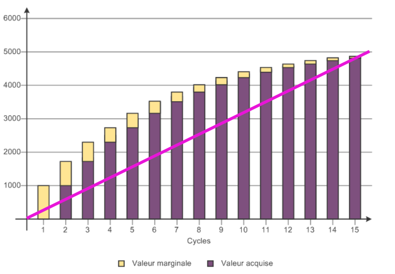MoSCoW
- Must Have
- Should Have
- Could Have
- Would (Won't) Have
Développement logiciel inspiré des chaines de production ou du batiment :
Des "intellectuels" réflechissent au produit à implémenter et des ouvriers interchangeables (voir des robots) produisent.
Et une fois un produit construit, impossible de le corriger. Coût de defect très cher.
Théorie X Y de Douglas McGregor

- Approche Prédictives :
- Plan the Work
- Work the Plan
- Approche empiriques :
- Fail Fast
- Fail Safe
Droit à l'erreur
Risk Management
On sait qu'il va y avoir des problèmes, mais on essaie de les rendre inoffensifs
Se planter d'objectif et perdre 2 semaines de boulot, c'est moins grave que de perdre 2 ans de boulot
Et humainement, accepter d'abandonner 1 jour de préparation est plus facile que d'abandonner 3 semaines de recherches
Fail Safe
En IT, on peut tester des trucs, on peut essayer.
Au pire on supprime le code.
Il n'y a pas d'objet physique à construire, ni d'outils ou de chaine de montage à acheter.
Facebook teste même en production, sur certains utilisateurs.
Bonus
Le temps perdu à se planter, ce n'est pas du temps perdu, c'est de l'apprentissage
TL; DR
- But
- Avoir le bon produit
- le livrer rapidement
- Moyens
- Itérations
- Auto-organisation
Agile Manifesto
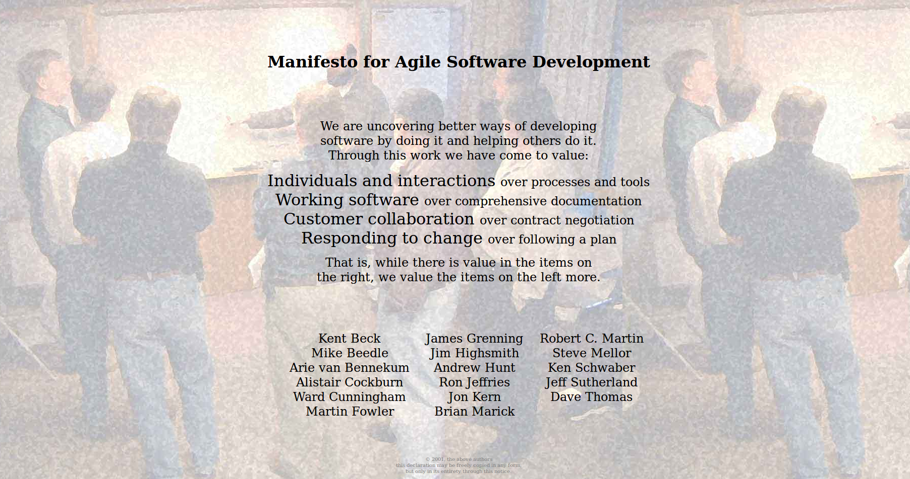Les Individus et les Interactions
plutôt queles Processus et les outils.
Un logiciel opérationnel
plutôt quede la documentation.
La collaboration client
plutôt quenégociation contractuelle.
S'adapter au changement
plutôt quesuivre un plan.
12 principes : 1
Notre plus haute priorité est de satisfaire le client en livrant rapidement et régulièrement des fonctionnalités à grande valeur ajoutée.
12 principes : 2
Accueillez positivement les changements de besoins, même tard dans le projet. Les processus Agiles exploitent le changement pour donner un avantage compétitif au client.
12 principes : 3
Livrez fréquemment un logiciel opérationnel avec des cycles de quelques semaines à quelques mois et une préférence pour les plus courts.
12 principes : 4
Les utilisateurs ou leurs représentants et les développeurs doivent travailler ensemble quotidiennement tout au long du projet.
12 principes : 5
Réalisez les projets avec des personnes motivées. Fournissez-leur l’environnement et le soutien dont ils ont besoin et faites-leur confiance pour atteindre les objectifs fixés.
12 principes : 6
La méthode la plus simple et la plus efficace pour transmettre de l’information à l'équipe de développement et à l’intérieur de celle-ci est le dialogue en face à face.
12 principes : 7
Un logiciel opérationnel est la principale mesure d’avancement.
12 principes : 8
Les processus Agiles encouragent un rythme de développement soutenable. Ensemble, les commanditaires, les développeurs et les utilisateurs devraient être capables de maintenir indéfiniment un rythme constant.
12 principes : 9
Une attention continue à l'excellence technique et à une bonne conception renforce l’Agilité.
12 principes : 10
La simplicité – c’est-à-dire l’art de minimiser la quantité de travail inutile – est essentielle.
12 principes : 11
Les meilleures architectures, spécifications et conceptions émergent d'équipes autoorganisées.
12 principes : 12
À intervalles réguliers, l'équipe réfléchit aux moyens de devenir plus efficace, puis règle et modifie son comportement en conséquence.
Valeurs
Respect, Confiance, Collaboration, Transparence, Simplicité, Changement, Amélioration Continue, Courage
Différentes Méthodes, Philosophies et Frameworks
Lean

Lean
- Éliminer les sources de gaspillage
- Favoriser l’apprentissage
- Reporter la décision
- Livrer très tôt et très fréquemment
- Responsabiliser l’équipe
- Construire la qualité intrinsèque
- Optimiser le système dans son ensemble
- Tirer plutôt que pousser
Scrum

Scrum

Scrum

eXtreme Programming

eXtreme Programming

XP values
- Communication
- Simplicity
- Feedback
- Courage
- Respect
XP Practices

Software-Craftsmanship

Agile without technic: deliver crap really fast!
Kanban
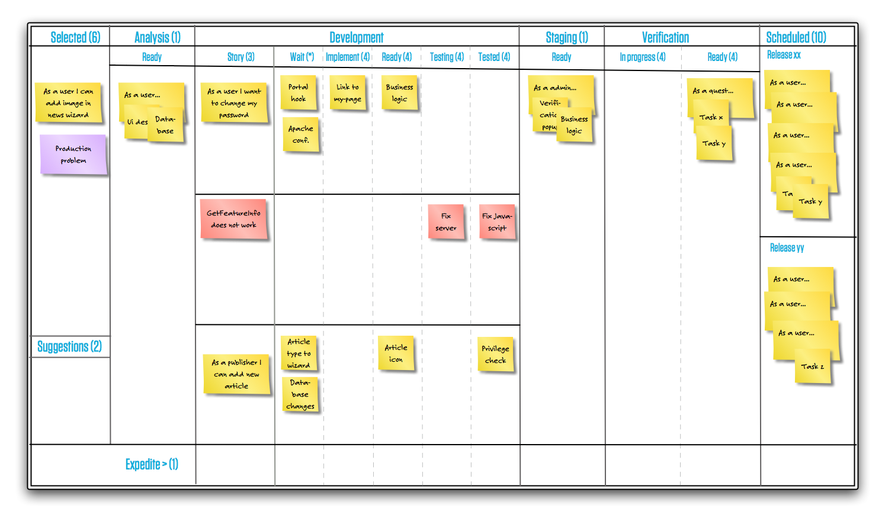Kanban
- Visualiser le processus
- Limiter le travail en cours (limites hautes et/ou basses)
- Mesurer le lead time (flux de travail)
- Rendre explicites les règles de gestion du processus
- Implémenter des boucles de feedback
- S'améliorer de manière collaborative
DevOps

SAFe

SAFe
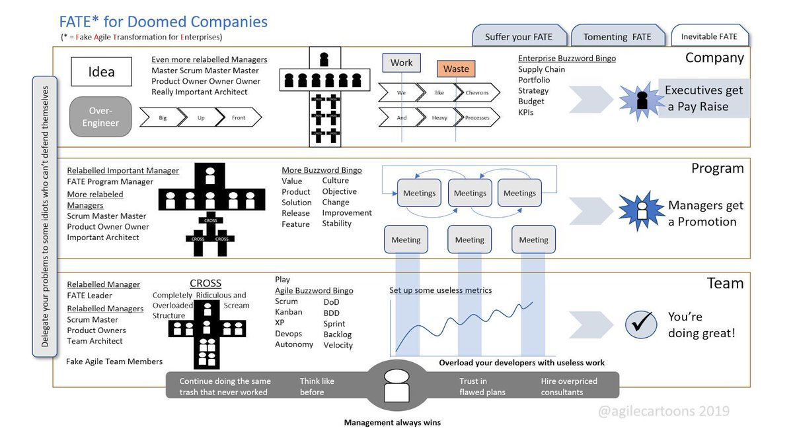Artisanal Retro-Futurism crossed with Team-Scale Anarcho-Syndicalism
arxta

ShuHaRi

- Shu ("protéger", "obéïr") — sagesse traditionnelle — apprendre les fondamentaux
- Ha ("se détacher", "digresser") — casser avec la tradition — trouver les exceptions à la sagesse traditionnelle, trouver de nouvelles approches
- Ri ("quitter", "se séparer") — transcender — il n'y a pas de technique ou de sagesse traditionnelle, tous les mouvements sont permis.
Specs
Imprécises
Rédigez un cahier des charges pour écrire des nombres en lettres
pluriel de "vingt" et "cent".
"et-un" ou "-un" ?
Facile != Simple
Et la Belgique ? et la Suisse ?
Le besoin peut évoluer.
Le besoin va évoluer.
"Si votre besoin n'évolue plus, c'est que vos utilisateurs sont morts."
Itérations
- peu de risques
- possibilités de changer
- adaptation en fonction des retours d'utilisations
- obligé de découper en tout petits incréments
- plus le temps passé à écrire les specs est court, plus on accepte de les changer
User Story
En tant que [rôle],
je veux [besoin]
pour [bénéfice]
User Story
User Story
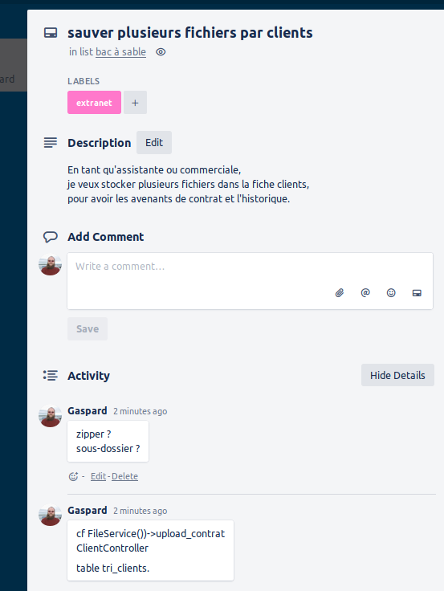 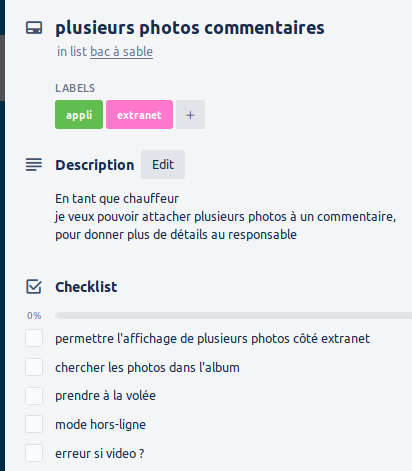User, utilisateur -> ça ne veut rien dire.
User Story
- Ce n'est pas une spec détaillée, mais un prétexte à la conversation
- Hierarchisées, priorisées, avec une valeur
- Formalisme simple compréhensible par tout le monde
- Description du besoin, pas de la solution -> pas de technique
- Pas de détails
SMART :
- Specific
- Mesurable
- Achievable
- Relevant
- Time Bound
INVEST :
- Independent
- Negotiable
- Valuable
- Estimable
- Small
- Testable
3C
- Carte
- Conversation
- Confirmation
6 D
- Désirable
- Démontrable
- Découpée
- Dérisquée
- Définition de Fini
- Discutée (ou Débattue)
Petites US :
- Plus facile pour écrire les conditions d'acceptances
- Flexibilité de planification
- Plus vite finies -> feedback rapide
- Grand nombre : estimation statistiques : NoEstimate
Cycle en V

Problèmes :
Ce qui est implementé n'est que ce que les devs ont compris
On fini par livrer un logiciel qui "marche" mais qui n'est pas utilisable.
Soit specs et tests sont redondant (donc inutiles)
Soit specs et tests sont incohérents (donc il faut recommencer)
Les "données" utilisées ne correspondent pas du tout à des cas d'utilisations
(type de données, volume, contenu, temps ...)
Le PO dit "là, par exemple, si je veux faire ... ça ne marche pas" avec un cas réel d'utilisations
autant utiliser les exemples dès le début !
et autant discuter avec le PO dès le début !
Calculatrice Lorsque je saisis 30, j’appuie sur le bouton +, je saisis 45, j’appuie sur le bouton égal, alors j’obtiens 75.
Orthodromie La distance orthodromique entre Paris (48°51’N – 2°21’E) et Montpellier (43°36’N – 3°53’E) est de 595 kms.
Calcul d’agios Sur le 4e trimestre 2012, un compte est débiteur de 451€ du 13/11 au 28/11 et de 342 € du 08/12 au 27/12, avec un taux d’intérêt de 20% annuel. Les intérêts sur la période sont de 7,27 €
Et si on utilisait ces exemples d'utilisations comme critères acceptances ?
ATDD : Acceptance Test Driven Development
Et si on les automatisait ?
Tests fonctionnels de non-regression
Bonus:
Si on a un cas bien décrit pour être automatisable, on a un exemple pour la démo et la doc
d'utilisation
Super - Bonus
Les Devs et le business parlent le même langage
ATDD
Given [conditions initiales]
When [action]
Then [résultat attendu]
SCRUM
Outils
Kanban Board

Kanban Board

Less Is More / YAGNI

Accessibilité
Pensez aux daltoniens, aux mal-voyants.
Gardez quelque chose de simple.
Burn Down Chart

Burn Up Chart
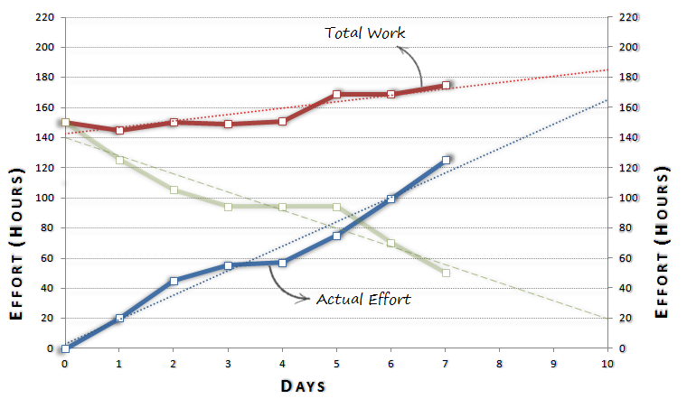Les clients des outils sont l'équipe de dev et le PO.
Procedez comme pour un client :
Ne faites que les fonctionnalités qui apportent vraiment de la valeur, faites du sur-mesure et recueillez du feedback
Préférer la simplicité à un outil clef-en-main d'un éditeur.
Des posts-its, un tableau blanc feront mieux que Jira
idem en Remote
Pas la peine de payer une fortune, un document partagé, un chat, un partage d'écran ... peuvent suffire.
Un outil que l'équipe ne contrôle pas risque d'être un outil que l'équipe n'utilise pas.
Contrat
Rolling contract
Un contrat par itération, avec un scope différent.
Money for Nothing
Le client arrête le projet quand il veut
(ie : quand il a obtenu assez de valeur).
Par contre, il paie une indemnité "pour rien" au fournisseur.
x sprints d'avance,
20% du budget total prévu.
Money for Nothing
Si un projet de 2 millions s'arrête à la moitié, le client paie 1,2 millions.
Le client économise 800 000
Le fournisseur gagne 200 000 sans travailler (mais perd un contrat)
Money for Nothing
Un peu comme des frais de résiliations.
Money for Nothing
Avantage client : il ne paie pas très cher pour n'avoir que des fonctionnalités accessoires.
Money for Nothing
Avantage fournisseur : le contrat s'arrête, mais le fournisseur touche une partie du prix pour avoir le temps de trouver d'autres clients.
Change for Free
Le client peut à tout moment changer l'ordre des priorités dans le backlog, gratuitement, sans avenant.
Calibration
Les n (3 ?) premiers sprint servent à évaluer la capacité de travail, le niveau de qualité de l'équipe.
Une période d'essai ?
PO contractuel
L'implication du PO est dans le contrat.
Contrat Agile Xebia
http://www.contrat-agile.orgQualité
Scrum n’adresse que l’organisation du développement
Scrum ne suggère pas de pratiques de développement
Pourtant la qualité doit être au centre de l’attention :
9ème principe du manifeste
Qu'est ce que la qualité ?
Et comment on peut la mesurer ?
Qualité
La qualité d'aujourd'hui est la productivité de demain.

Les autres outils sont des indicateurs, mais en aucun cas des mesures fiables, et encore moins des objectifs.
La sur-qualité n'existe pas.
Over-engineering
Dette Technique

La dette technique est un choix.
C'est un emprunt qu'il faudra rembourser, avec des intérets.
C'est choisir de ne pas faire certaines choses (refactorer, relire le code) pour aller plus vite à un moment précis pour un but précis.
Ce n'est pas écrire du mauvais code, ce n'est pas de l'incompétence.
Valide pour certains projets "one shot" :
un petit script pour trier un tas de données, un spike pour essayer une techno ...
Mais la plupart du temps les one-shots sont maintenus pendant des années.
later is never
eXtreme Programming
eXtreme Programming
Test
Tout le monde a un environnement de tests.
Certains sont assez chanceux pour qu'il soit séparé de l'environnement de prod.
Tout le monde a des testeurs.
Certains sont assez chanceux pour qu'ils soient différents des utilisateurs.
Test Unitaires
FIRST
- F - Fast
- I - Independant
- R - Reproductible
- S - Self-Valid
- T - Timely
Et si en plus d'avoir les tests "fonctionnels" à remplir, on poussait à l'extreme :
pour chaque tache de la user story ?
pour chaque méthode ?
d'abord écrire le besoin, puis le réaliser.
TDD
Test driven development ?
Test driven design ?
l'objectif n'est pas les tests, c'est le design !
le batterie de tests n'est qu'un effet de bord en cadeau
Focus sur le besoin !
oblige à réfléchir à ce que je veux en sortie
ce dont j'ai besoin en entrée
avant de faire la prod


Avantages
- écrit les specs en même temps que les tests
- plein de tests pour la non-regression
- oblige à définir le besoin avant de coder
- code testable == code modulaire
- YAGNI : on évite d'écrire du code inutile
- gain de temps : pas de débuggueur, ni de logs
Unitaire
un seul concept métier par test
Calculatrice : division
un test pour la division
un test pour l'erreur de division par zéro
un seul assert ?
XUnit (Juni, NUnit, CppUnit ...)
d'autres frameworks
vous pouvez facilement créer le votre
Avec un peu de bonne volonté et d'imagination on peut faire un truc qui s'approche du TDD sur de l'embarqué, du front.
1st class citizen
Les règles qui s'appliquent au code s'appliquent aux tests
qualité
clean-code
refactor => setup, teardown
git
relecture
Test End-to-End : fausse bonne idée
- Pas possible d'être exhaustif
Nécessite beaucoup de tests (combinatoires) - Cher
définir l'environnement (bdd serveur, fichier, appels externes, ...)
définir toutes les entrées et toutes les sorties ... - Long
donc executés rarement - Fragile
faux positifs si changements d'environnement, d'année ...
uniquement pour valider les cas principaux et représentatifs des US
BDD - Cucumber
le business écrit dans sa langue :
Feature: Is it Friday yet?
Everybody wants to know when it's Friday
Scenario Outline: Today is or is not Friday
Given today is "Monday"
When I ask whether it's Friday yet
Then I should be told "Nope"
l'équipe de dev fait le lien entre le langage business et le code.
Attention: les tests permettent uniquement de prouver ce qui marche, pas l'absence de bugs
Automatisation
les tests ne sont utiles que s'ils sont lancés
CI
- Pour vérifier que les tests passent quelque soit l'environnement
- Pour les batteries de tests très longues
- Parce que les devs oublient des fois de commiter !
- Pour tester tout le code et les régressions
Continuous Integration
Principe : un serveur "récupère" les sources et lance un build et tous les tests
Ca permet d'éviter les soucis à base de "ça marche sur ma machine"
- les devs travaillent en local
- puis commitent sur le repo
- le serveur CI surveille le repo et checkouts les modifications
- le serveur CI lance un build, des tests, des analyses ...
- le serveur informe l'équipe du résultat (slack, "radiateur", son ...)
- une revue de code humaine peut faire partie du workflow
- une analyse automatique du code peut faire partie du workflow (sonar)
- si KO : toujours réparer le build en priorité
- Profiter de l'automatisation pour lancer des tests plus longs (performances) la nuit ou le week-end
Pas de commit sur un build cassé : on répare d'abord.
- défini clairement le process de build
- permet de valider fréquemment
- permet d'avoir toujours une version livrable
Pas de commit sur un build cassé : on répare d'abord.
Continuous Delivery
Et pourquoi ne pas automatiquement déployer une nouvelle version ?
Soit en prod, soit en pré-prod, ou béta pour test et démo.

Continuous Delivery / Deployement

Guerilla CI
Ne demandez pas l'autorisation, c'est trop long
installez un serveur Jenkins (et Gitlab) sur un vieux PC qui traine dans le coin.

Pipeline as Code
Il est tout à fait possible de versionner ses jobs qui lancent les builds
Devops
La partie build / deploiement doit être gérée par l'équipe.
Ou en impliquant au maximum l'équipe
Propriété collective du code
Valeur forte d'XP
Egoless programming
Pour passer du Cowboy coder associal à un vrai travail d'équipe.
Pair-programming
Pourquoi ?
- éviter des bugs
- apprendre la technique
- apprendre le contexte métier
- partager les norme de codage
- propriété collective du code
- obliger à verbaliser le problème et la solution
- discuter des besoins avant de coder
- augmenter la concentration
- être une équipe, discuter avec des humains
Très fatiguant
- commencer petit (1-2h par jour)
- faire des pauses régulières
- Pomodoro
- évitez les grands open-spaces
- changez de binômes
- faites tourner le clavier
- toujours dans le respect de l'autre
Pas possible ?
- ne demandez pas, faites le.
- ne nommez pas ça "pair-programming", demandez juste de l'aide
- utilisez un canard en plastique (ou n'importe quel objet)
De toutes façons vous en faites déjà !
Même en remote ?
Comme tout passage en remote :D
Avec des "étrangers" ?
Mob-programing
Pourquoi s'arrêter à 2 ?
Code Review
Pourquoi ?
- vérifier que la feature est bien réalisée
- éviter des bugs
- apprendre la technique
- apprendre le métier
- partager les norme de codage
l'apprentissage est dans les deux sens
Ce n'est pas
- Vérifier que les tests passent
- Parler du formattage
- Parler de l'architecture
- Partir du principe que tout doit être questionné
- Partir du principe qu'il y a toujours une explication
Toujours respecter les autres
Que l'on soit l'auteur-e du code ou la personne qui relit.
On critique le code, pas la personne
Hard with code, soft with human
En asynchrone, sur un outil de gestion de conf.
En discutant au bureau de son/sa collègue.
l'écrit peut être ambigue, surtout dans une langue qu'on maitrise mal.
Attention aux tournures.
Préférer les questions plutôt que les affirmations.
500 lignes de code à relire ? Ok, on merge
15 lignes à relire ? 15 commentaires ou questions.
Faire des toutes petites merge requests
Kanban
- Visualiser le Flux
- Limiter le travail en cours (WIP : Work in Progress)
- Réduire le Lead-Time
Du Scrum sans itération ?
Bien pour de la TMA
Transition Kanban
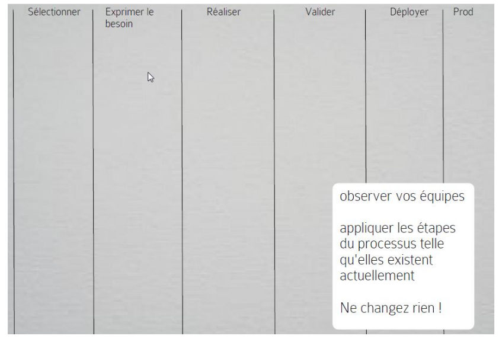Transition Kanban
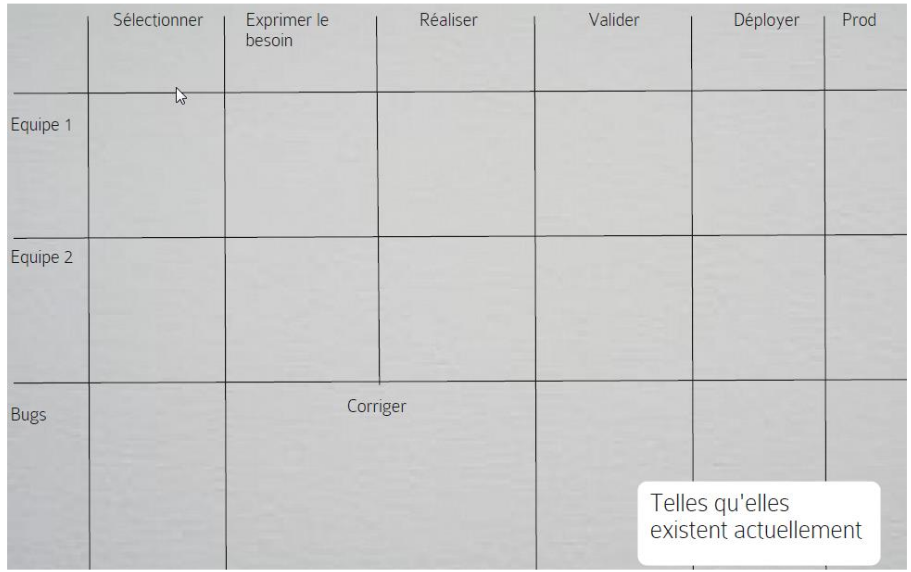Transition Kanban
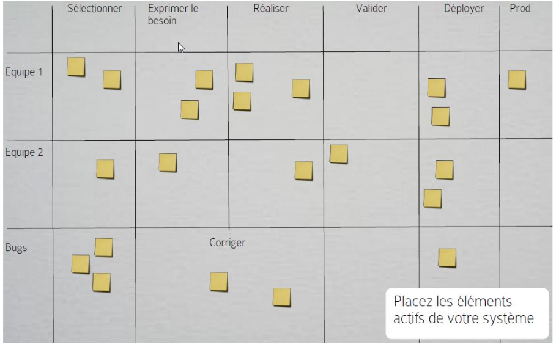Transition Kanban

Transition Kanban
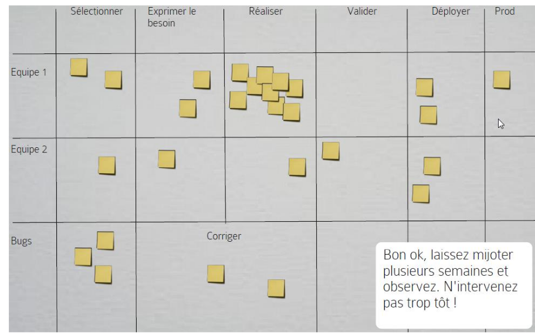Transition Kanban
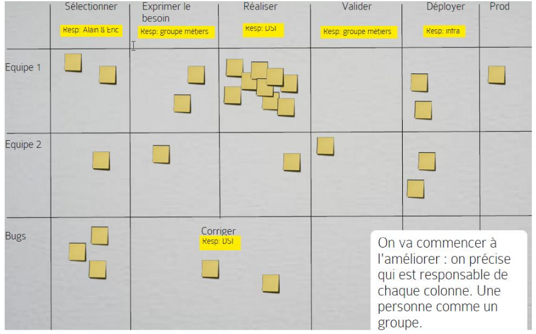Transition Kanban
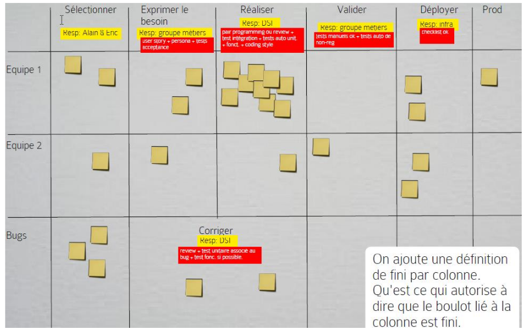Transition Kanban
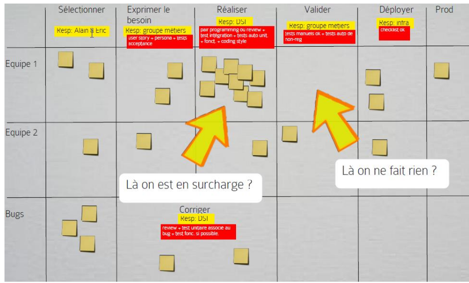Transition Kanban
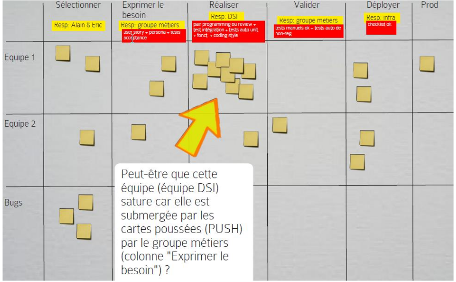Transition Kanban
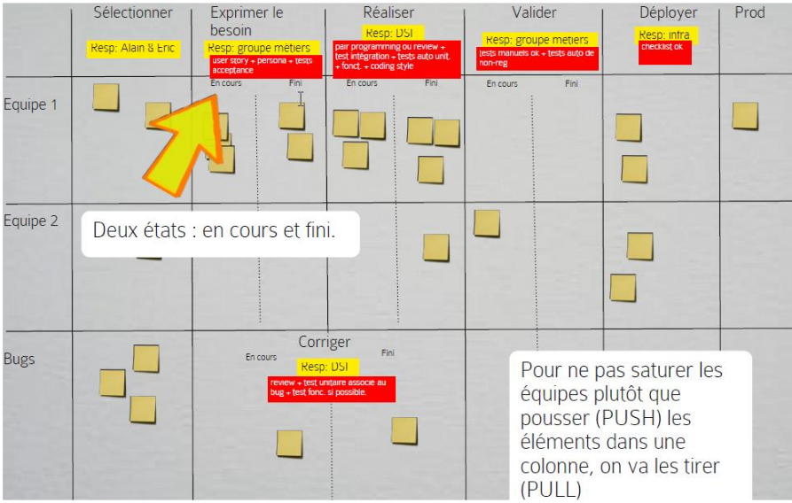Transition Kanban
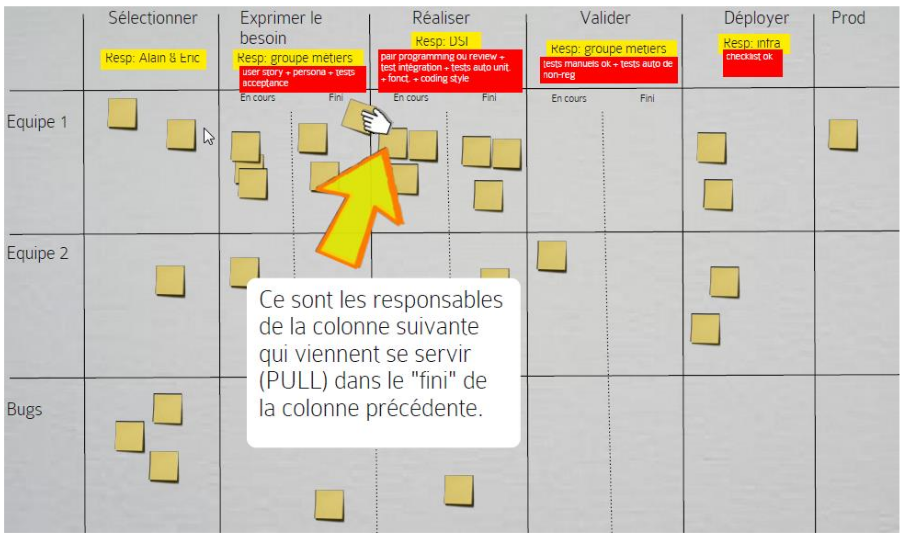Transition Kanban
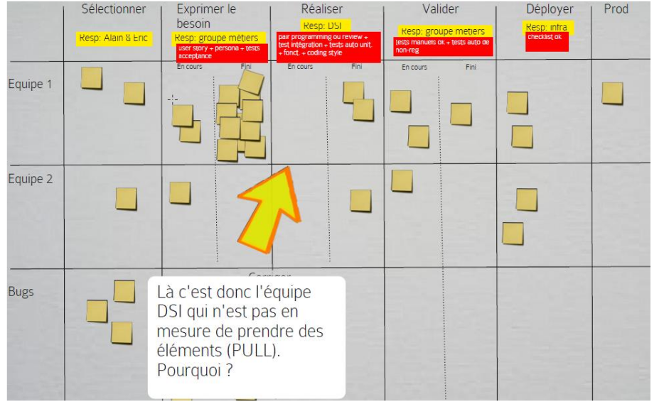Transition Kanban
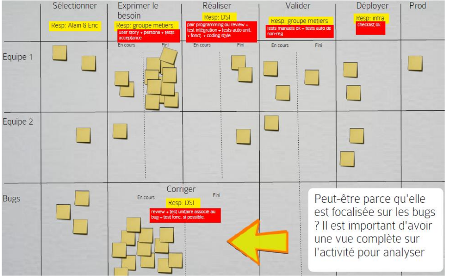WIP
Lead-Time
Pull
Scaling ?
DON'T !
Comment sortir un logiciel qui apporte de la valeur en une semaine avec 200 personnes ?
Scale Up
plutôt queScale Out
L'agilité, c'est faire des tout petits projets rapides.
Mais il faut que les équipes gardent une vision d'ensemble à long terme
Think global, act local
Nombre de Dunbar
D'après l'antropologue / primatologue Robin Dunbar, la limite cognitive du nombre de personnes avec lesquelles un individu peut avoir des relations stables est 148.
Une équipe : 7 personnes (3 - 12)
département : 50 (7 * 7 personnes)
maximum : 150
Scrum de Scrum
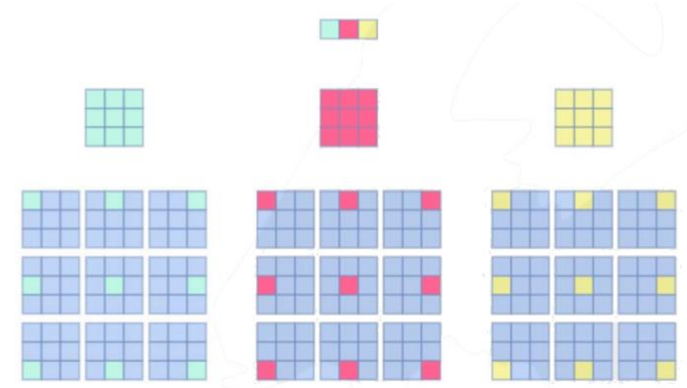Un membre de l'équipe participe au scrum de scrum.
Pas le scrum master (sauf s'il fait aussi du dev).
On fait des rétros, on itère et on expérimente.
à l'échelle de Organisation
L'agilité va rendre visible les points bloquants.
L'agilité va rendre visible les services inutiles
(sous-traitants,
middle-management).
Risque de clashs avec d'autres services pas encore agiles.
Que faire des managers ?
Surtout pas des Scrum-Master !
Changement total de paradigme
Violence symbolique involontaire
Nécessite de travailler sur 3 fronts
- Direction : doit accepter de lacher prise et donner les moyens
- Equipes : doivent accepter leurs responsabilités
- Client : doit faire confiance et s'impliquer
Ne pas "forcer" l'agilité en top-down.
Etendre au reste de l'entreprise
- Recrutement
- Formation
- Commerce
- Achat
- Salaires
Faire confiance et laisser faires les équipes
Nécessite d'être transparent, de former et de donner les moyens.
Cheat Certification
throughout development of the software
Product => PO
Scrum => SM
Sprint => Dev
/!\ may / must / should
Pas d'architecte, pas de sprint 0
Dev Team == Developers (même si ça peut être des testeurs ou autres)
Dev Team : Cross-functional
Dev team : unie, donc tout le monde est responsable, pas d'individualité.
Tout le monde peut faire de tout.
le PO priorise
Lisez le scrum guide, en anglais
Lisez les glossaires
faites plein d'examens blancs, et ceux des autres rôles